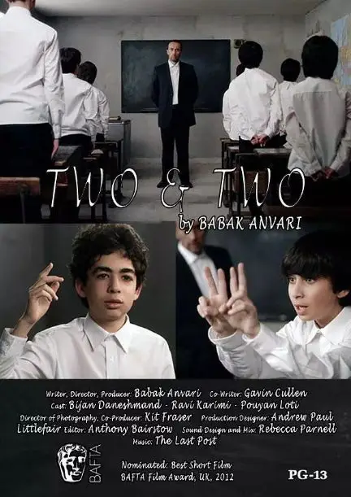
一个人睁着眼睛说瞎话是需要勇气和脸皮的。
而让一群人跟着你一起睁着眼说瞎话是需要手段和帮凶的。
今天就为大家介绍一部短小精悍的短片《two & two》
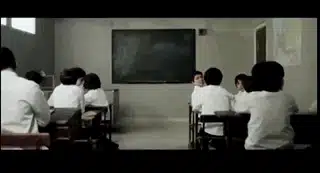
青灰色的墙壁，封闭狭窄的空间。
这个教室像是一所监狱。
12个男孩正在有说有笑地交谈着。
忽然一脸严肃的男老师走入教室。
学生们立马起立，整个教室鸦雀无声，空气中弥漫着惧怕和压抑。
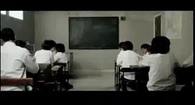
接着，教室广播响起：
同学们，今天学校将会有一些改革和变化，你们的老师将会对于你们的未来给出建议和规划。
而你们需要做的就是仔细地听取老师们的建议，并严格遵从他们的指示，你们将是学校和同学们的骄傲。
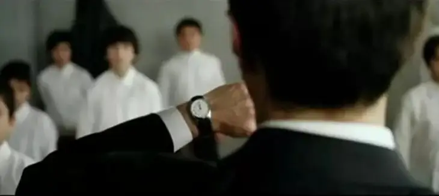
广播结束后，老师在黑板上写下“2 + 2 = 5”后宣布开始上课。
学生们都知道这是错的，所以禁不住小声嘀咕。
老师立马用黑板擦敲了黑板两下，命令大家保持安静。
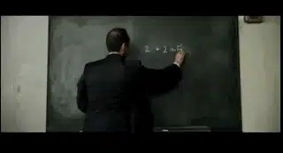
然后他不断命令学生跟着他朗读这个错误的等式。
起初学生的声音很低，后来随着老师声音的增加，大家也异口同声大声喊着这个错误的等式。
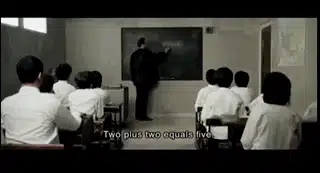
仿佛，这不是一个等式，而是一个不容任何人质疑和撼动的宣言、口号。
终于，一个胆小的学生怯生生地举起手，小声地和老师说两加二是四，而不是五。
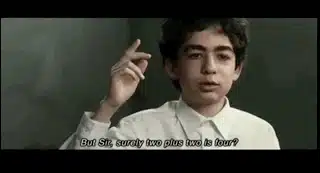
老师严肃地告诉他，“不要想，你不必思考”，并再次向学生保证答案确实是五。
在老师的压力下，学生慢慢坐了下来。
然后老师要求全班人将不正确的等式抄写到他们的笔记本中。
这时，另一名学生站起来抗议，并坚决称答案是四。
老师气愤地问他，“谁允许你说话？” 。
老师强迫该学生接受2+2=5.
可是学生继续坚持自己的立场，并一边用手比划着，一边大声地告诉大家2+2=4。
老师忍无可忍离开教室，并警告学生，在他回来之前不允许坐下来。
最后，老师带着三个年长的学生回来，他们胳膊上戴着红袖章，有着军人一般的体魄和严肃。
老师问这些高年级学生二加二等于几。
他们异口同声地说等于五。
接着，老师质问抗议的学生：你以为你懂得比他们多，你竟然敢质疑黑板上的等式。
接着老师把学生叫到黑板面前，并给他递上一支粉笔来完成等式，要让他当着全班人的面写下二加二到底等于几。
老师向他发出警告，这是他给出正确答案的最后机会。
这时，三名高年级学生也突然举起手臂，像是拿着枪一样指着男孩，他们的眼神充满了阴狠的戾气。
男孩犹豫再三，最后咬了咬牙，还是在黑板上写了“4”。
突然一阵枪声，男孩应声而倒，他的鲜血溅到黑板中的等式上。
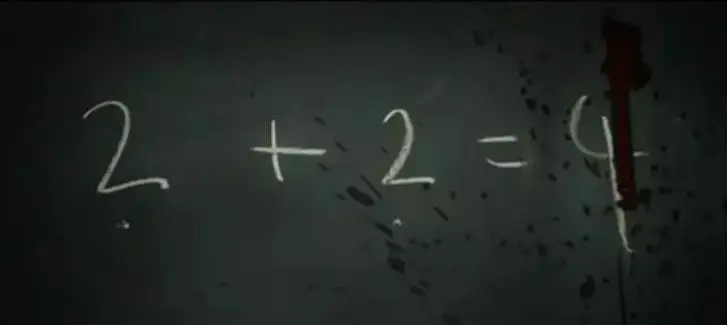
所有的一切都发生在其他同学的眼前，但是他们始终都是沉默的。
没有了异见分子，老师重新开始上课，好像什么都没发生一样。
当老师继续命令学生写下“2 + 2 = 5”时，大家纷纷按照老师的要求将错误的等式写在笔记本上。
镜头最后结束在一个作业本上的特写镜头。
一个男孩，刚开始写着5，后来又将5涂抹掉，改成了4。
这是一个很简单的短片，简单到每个人都能很清楚地看到邪恶是如何运行的。
他们可以用恐惧和谎言来歪曲真理，并让虚假重复一千遍变成真理。
有任何人胆敢去挑战和撼动他们的谎言，他们会毫无犹豫地将他置之死地。
而邪恶能轻松吞灭善良不仅因为他们有武力，更是得益于沉默的大多数。
当这种邪恶出现在真实的历史中时，能分辨、能知道2+2=4的人是少数，知道真相又敢去捍卫真相的更是凤毛麟角。
但是历史的每一次变革却都是由这些明明不可为而为之的勇士完成的。
当文革如火如荼地进行的时候，才女张志新却敢言：
主席讲话中说，文化大革命成绩是主要的，我看不见得。
我就想，文化大革命的一些做法，是否非得那样做？群众中刚出现戴忠字时，我就有想法。
过去封建时代讲忠，现在搞这个干什么？整这玩艺干什么?再过几十年的人看我们现在和领袖的关系，就像我们现在看从前的人信神信鬼一样不可理解。
因为坚持说真话，她被抓起来关了很多年，在监狱中她仍然“死不悔改”，坚持“强迫自己把真理说成错误是不行的”。
最终张志新被判死刑，而家人为保安全，与张志新的关系断得干干净净，当时她10岁的女儿忍着恐惧做下这样的笔录：
坚决镇压，把她处死刑，为人民除害，我们连尸体也不要，愿意怎么处理就怎么处理，我们都拥护，对于张志新在监狱的还有什么财物，我们什么都不要。
被家人背叛、被暴民虐待、轮奸，张志新经历了比地狱都可怕的恐怖行径。
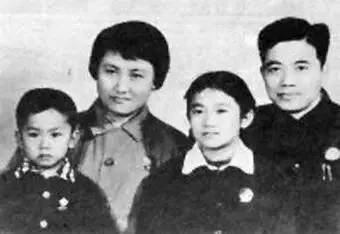
在执行枪刑时，因为担心她把真相喊出来，他们通过“割喉”这样残忍的方式让她闭嘴。
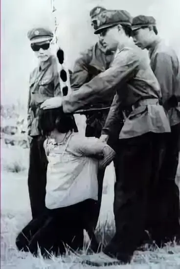
像张志新这样勇敢的人还有不少，只是我不敢多提他们的名字。
他们身上所闪耀出来的光芒虽然短暂、微弱，但对于那黑暗的十年来说一定是最耀眼的。
没有他们，那漫长无情的黑暗又会吞噬多少希望和生命！
让我们再将目光转到二战时的德国。
希特勒为了控制全国人民的思想，推行排挤犹太人和对外侵略的政策。
他很聪明地盯上了德国教会。
因为教会很大程度上影响着人们的思想和想法。
因此纳粹串改正统信仰，系统地对基督教实行去犹太化和雅利安化，代之以国家主义、反犹反共等纳粹主张。
从宗教神学角度对德国历史、日耳曼血统以及希特勒本人进行的神圣化阐释。
如此一来雅利安血统成为上帝选定的统治者、希特勒成为上帝给人类的启示、“纳粹十字”成为“一个自我牺牲的标志。
就这样，很多教会被纳粹化组成“德意志基督教”，有意无意地成为整个纳粹政权的有机组成部分。
1933年4月德国通过了臭名昭著的种族法案——《社会公共服务法案》，该条款规定具有犹太血统的人不得担任任何社会公职，其中包括任何教会职务。
而被纳粹操纵的“德意志基督教”公开地撤销犹太裔基督徒的教会公职，同时非公开地从平信徒中驱逐拥有犹太血统的人。
这无异于将可怜的犹太人推入万劫不复之地。
随着纳粹对于德国教会控制的深入，本应该作为高举上帝的地方，却插上了万字旗，本应该在惨绝人寰的屠杀面前发声的时候，很多教会选择了沉默、逃避和含混其词。
即使有信仰，在这种极端环境之下分辨出2+2=4也是非常困难。
但是，仍然有人持守信仰，在黑暗中发出了信仰之光。
教宗庇护十一世在德国入侵波兰后，发布了《在焦虑中》的通谕，谴责纳粹德国奉行的异端思想，以及一个民族、一个国家和一个元首的政策，将纳粹定义为“新的、野心勃勃的异教”。
卡尔.巴特是著名神学家、牧师，也是德国忏悔教会的领导者，该教会积极反对阿道夫希特勒和纳粹政权。
坚决抵制任何来自“德意志基督教”的对教会原则的侵犯，并坚决反对在教会中引入“雅利安条款”，抗议禁止新闻和言论自由，同时尽可能地帮助一切因坚持信仰而受到迫害的人。
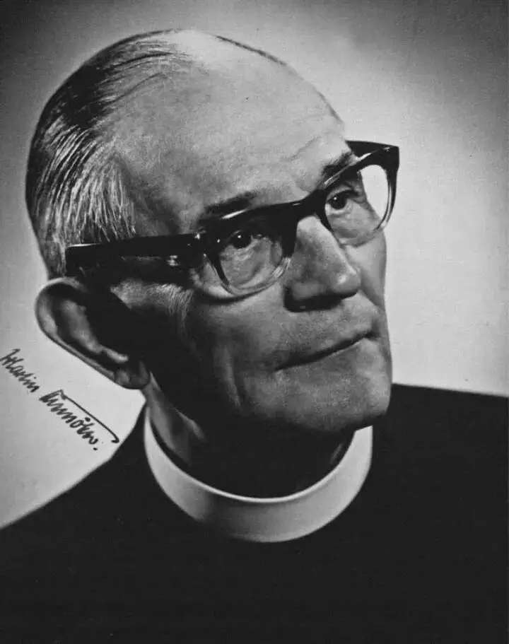
截至1934年1月，德国有6000多名牧师加入这一组织，占德国牧师总人数的三分之一，对于当时的德国影响巨大。
巴特主持召开了巴门会议，发表了著名的“ 巴门宣言”，该宣言高举圣经，按着信仰的原则激烈地批评了支持纳粹的基督徒。
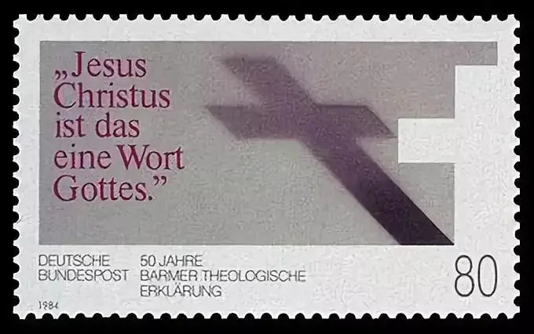
△ 德国邮票：50年的“巴门宣言”
迪特里希•朋霍费尔是天才神学家，早期曾支持过纳粹，在后来认清纳粹的邪恶后，曾在认罪宣言草稿中写道：
教会曾经在必须嘶喊的时候封缄其口……教会曾经看着惨无人道的暴力蛮横地施行，无数的无辜者、受压迫者承受着身体和灵魂上的痛苦；
曾经看着仇恨与谋杀横行，而没有发出她的声音，没有找出可以赶紧帮助他们的方法。教会是有罪的，她愧对耶稣基督里那些孱弱又无自卫能力的弟兄的生命。
1939年，朋霍费尔来到美国，完全有机会躲过战争，但是他最终还是决定返回德国。
他认定：“德国的基督徒将会面临一种可怕的选择，要么情愿自己的国家战败，这样基督教文明可以存活，要么选择国家的胜利，这样就摧毁我们的文明”。
回国后，为了阻止希特勒的暴行，他参与了希特勒的刺杀行动，同时他在德国完成著作《伦理学》。
他的观察和洞见非常犀利：
我们的统治者希望从人们的愚蠢之中，而不是从人们认真而独立的思想判断之中，获得更多的利益。
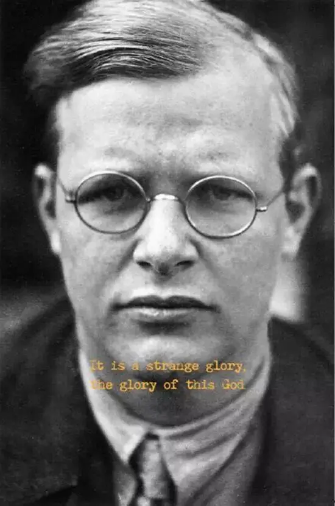
1943年，朋霍费尔订婚，同年四月被捕入狱，在狱中完成思想深邃的《反抗与投降》、《狱中书简》。
在收录其中的一首诗中，朋霍费尔从信仰的高度鼓励大家在危难中彼此帮扶，当人们处于绝望的时候，走向上帝是每个人的本能反应，但是基督徒不应该止于此，而是要看到上帝的恩典：在危难中，是上帝主动走向人。
如果基督徒被这份恩典得着，最终“上帝走向人”变成了“人走向人”，每个人会带着上帝的爱走向那些处于绝望中的人，走向那些被战火摧残的人，走向那些可怜的犹太人。
1945年4月9日，就在二战马上结束的前夕，朋霍费尔被秘密处以绞刑，
他临终的遗言是：“这并不是我的终点，这是生命的开端。”
而像他们这样坚持信仰的人还有很多，有几千名牧师为此被捕入狱，留下感人至深的遗言，下面是一些摘录：
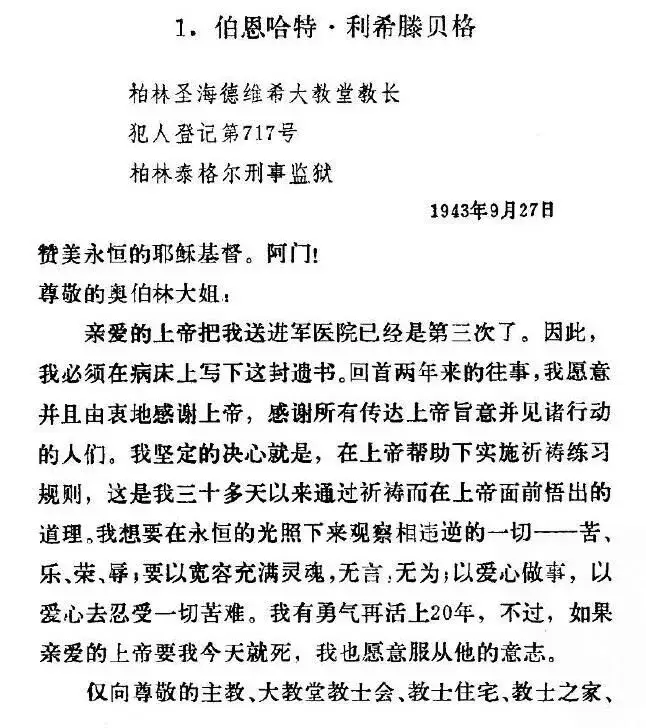
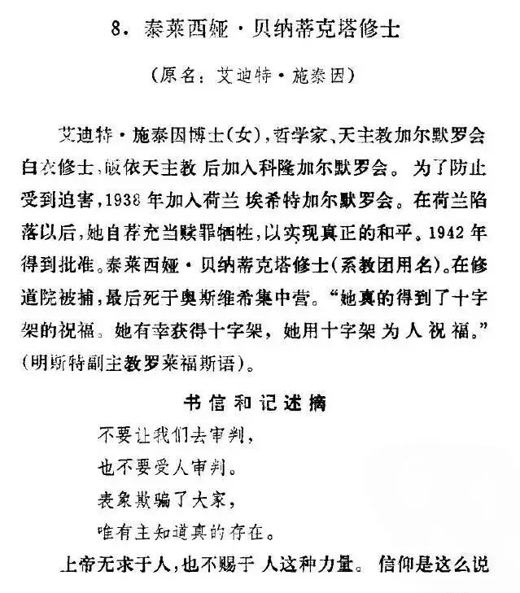
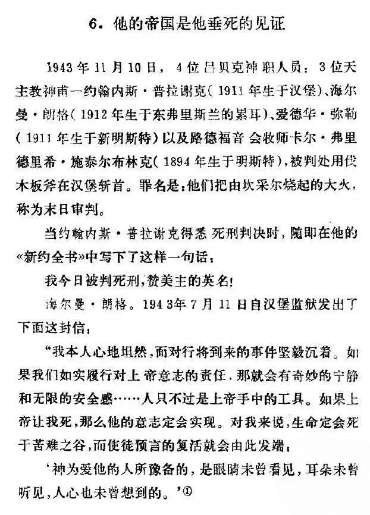
极端环境之下如何像他们一样做个清醒者？
朋霍费尔有着深刻的看见：
蠢人不可能靠教育来拯救，他所需要的是救赎，此外没有别的办法。
迄今为止，企图用理性论证去说服他，丝毫没有用处........
正如《圣经》所言：“敬畏耶和华是智慧的开端。”
换言之，治疗愚蠢的唯一办法，是灵性上的救赎，因为唯有这样，才能使一个人像上帝眼中负责任的人那样生活。
的确，忠实于上帝，不神话任何一个人，我们才不会奴颜卑膝、低三下四，也不会在大是大非面前做一个沉默的帮凶。
因为上帝已带你走过死荫的幽谷，让你不怕任何遭害和患难。
正是这种真正的信仰改变了德国，二战后德国的首任总理康拉德·阿登纳曾成长于地下教会，在他的领导下，德国逐渐走向复苏。
而更加难能可贵的是，二战中很多沉默的牧师引领了战后德国对于自己的反省和忏悔。
其中最为著名的就是马丁-尼莫拉牧师(早期支持过纳粹，后参加过巴特主持的巴门会议，因发表发动言论被捕)的忏悔诗，他曾在1937 年——1945 年先后被关押于萨克森豪森和达豪集中营，并得以幸存，战争结束后，他写下《起初他们》一诗为世人所铭记：
起初他们追杀共产主义者，我没有说话，因为我不是共产主义者；
接著他们追杀犹太人，我没有说话，因为我不是犹太人；
后来他们追杀工会成员，我没有说话，因为我不是工会成员；
此后他们追杀天主教徒，我没有说话，因为我是新教教徒；
最后他们奔我而来，却再也没有人站起来为我说话了。
关注并回复：2 + 2 = 5
获取短片资源
相关推荐：
击垮纳粹独裁的六份传单
这是一部绝不可辜负的经典
《第九日》| 你的神圣与耶稣没有一点关系，向纳粹效忠还是向真理顺服（根据牧师日记改编）
这里没有挑逗你眼目情欲的小鲜肉
也没有挑动你肉体情欲的段子
更没有膨胀你今生骄傲的鸡血
我们只在乎那些最质朴真诚的作品
在那里我们才能恢复真正的想象力
我们也坚信这才是我们真正需要的
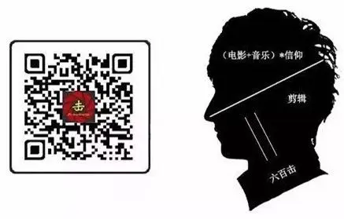
ID:Six_hundred_hits
长按二维码，一键关注
【六百击】
-END-
电影评论
尽情分享朋友圈

苹果打赏通道
小提示：文末广告是腾讯配送广告，内容与本号无关，但您的每次点击（无需反复点）都会给平台带来几毛收益，欢迎您点击支持六百击。